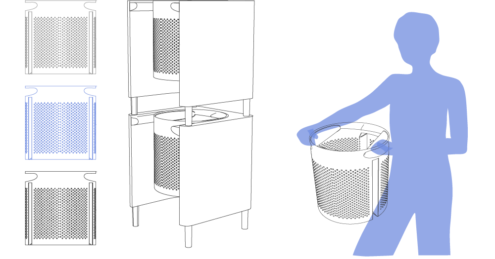

In times of smart home and internet of things the things, which are surrounding us, are becoming smart. The fridge is caking care of the groceries inside. And if something is empty the fridge is sending this information onto the phone, when you enter a supermarket. So there are many examples regarding the daily life, which could make it more comfortable. How could to do the laundry comfortable. It should be easy as just pushing a button and easy to arrange the laundry. And could a washing machine looking like another furniture?
A Vision of Smart Laundry
How can smart laundry look like?
the idea
the way it works

For each type of laundry there is one basket you can order it to. For storaging them, they can be easily stack.
The basket, which is the washing drum at the same time, can be placed directly into the washing machine. There is also enough place for a whole bottle of washing powder, so that the machine takes just as much of it, as it needs for the laundry inside. You have to refill it just once in a while. Because of a RFID chip inside the basket, the washing machine knows already which programme it needs to run.
There is just a simple interface on the maschine to be seen with all customized programms. For detailed setting, you actually need seldom there is an application. so its jut necessary to push a single button to start the laundry. An LED circle is showing the progress of the laundry: